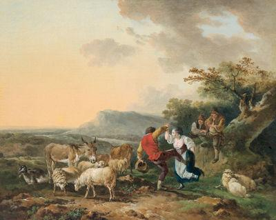

On a Bank of Flowers
Sur un pré fleuri
A Pastorale
from "The True Loyalist", page 7, 1779
and from Hogg's "Jacobite Relics" N°30, vol.1, 1819
Tune - Mélodie
"On a Bank of Flowers" or "Air Bruac na Blata"
from S.O'Neill's "Music of Ireland (1903), N° 257
Sequenced by Christian Souchon
|
To the tune:
Source for notated version: Chicago Police Sergeant James O’Neill, a fiddler originally from County Down and Francis O’Neill’s collaborator. O'Neill (Music of Ireland: 1850 Melodies), 1903/1979; No. 257, pg. 45. Source "The Fiddler's Companion" (cf. Liens). A variant of this song appears in 1819 in Hogg's "Relics", volume 1, page 49 under N°30 (1819) with the mention "for the air, see p.1" (When the King enjoys his own again). In a note Hogg states: "Is another of the same [series of bacchanalian songs], but the festival is supposed to be kept by a number of hinds with their sweet hearts in a meadow. It has little merit, but might be instrumental in swaying the political affections of the peasantry where it was sung." The first mentioned tune, titled "on a Bank of Flowers" like the song in the "True Loyalist", is more appropriate to the lyrics than "When the King enjoys..." To the Lyrics In Hogg's version, stanza 1, Jamie's health not Charlie's is drunk. In the second stanza they drink to the Queen and the Prince, in the 'True Loyalist" to the King and the Duke. Hogg's lines apply to James VII, Mary of Modena and the Prince of Wales. The "Loyalist"'s to James VIII, Prince Charles and his brother Henry, Duke of York (born in 1725). The "Loyalist"'s final stanza on George I (d. 1727) and his son, is not in Hogg, whose version is obviously earlier than the accession of the House of Hanover (1714). Hogg's is the version in "A Collection of Loyal Songs" printed in the year 1750. The version in the "True Loyalist", is the second song in the collection. It is ascribed by the 1822 collection of biographies published in 1822 as the "Lives of Scottish poets", to the poet Charles Salmon (1745- c. 1779) who very likely also wrote the opening song of the "True Loyalist", The Royal Oak Tree . See also The three Healths |
 |
A propos de la mélodie:
Source pour la version notée: le sergent de ville de Chicago James O'Neill, violoneux originaire de County Down et collaborateur de Francis O'Neill. O'Neill (Music of Ireland: 1850 Melodies), 1903/1979; No. 257, pg. 45. Source "The Fiddler's Companion" (cf. Liens). Une variante de ce chant se trouve dans les "Reliques" de Hogg, au volume 1, page 49, chant n°30 (1819) avec la mention: "timbre du chant N°1" (Si le roi reprend sa charge). Dans une note Hogg précise: "Encore un chant sur le même modèle. Il s'agit d'une fête champêtre qui réunit bergers et bergères dans une prairie. Le chant n'a que peu d'intérêt, si ce n'est qu'il a pu contribuer à orienter les choix politiques de la paysannerie, là où il était chanté." Le premier timbre mentionné porte le titre "Sur un pré fleuri" comme le chant du "Vrai Loyaliste". Il convient beaucoup mieux au texte que "Si le roi reprend sa charge". A propos des paroles Dans la version de Hogg, 1er couplet, on boit à la santé de Jamie, non à celle de Charlie. Dans le 2ème couplet on boit à la Reine et au Prince, chez Hogg mais ici au Roi et au Duc. Le texte de Hogg s'applique à Jacques VII, Marie de Modène et au Prince de Galles; celle du "Loyaliste" à Jacques VIII, au Prince Charles et à son frère Henri, Duc d'York (né en 1725). Le dernier couplet du "Loyaliste" sur Georges I (mort en 1727) et son fils ne se trouve pas chez Hogg dont la version est visiblement antérieure à l'accession de la Maison de Hanovre (1714). La version de Hogg est celle du "Recueil de chants loyaux", imprimé en 1750. Celle du "True Loyalist", où le chant est le second du recueil, est attribuée par la collection de biographies parue en 1822 sous le titre de "Lives of Scottish poets", au poète Charles Salmon (1745- c. 1779) qui serait également l'auteur du chant sur lequel s'ouvre le "Vrai Loyaliste", The Royal Oak Tree . Cf. aussi The three Healths |
Sheetmusic - Partition

|
ON A BANK OF FLOWERS
1. On a bank of flowers on a summer's day, Where Lads and lasses met; On the meadow green, each maiden gay, Was by her true love set; Dick fill'd his glass, drank to his lass, And C[harles]'s health around did pass: "Huzza!" they cried, and a' replied "The Lord restore our King!" 2. To the King says John: Drink it off, says Tom, They say he's wond'rous pretty: To the Duke says Will: that's right says Nelly God sends them home, says Betty: May the Powers above this crew remove And send us here the lads we love: "Huzza!" they cried, etc. 3. The liquor spent, to dance they went; Each youngster chose his mate; Dick bowed to Nell, and Will to Moll; Tom chose out black-eyed Kate. Name your dance says John: play it up, says Tom, May the King again enjoy his own: "Huzza!" they cried, etc. 4° G[eorg]e must be gone, for he can't stay long, Lest cord or block should take him; If he don't, by Jove and the Powers above, We are all resolved to make him: Young G[eorg]e too must his dad pursue, With all the spurious plundering crew: "Huzza!" they cried, etc. Source: "The True Loyalist", page 7, 1779 |
THE KING SHALL ENJOY HIS OWN.
1. In a summer's day, when all was gay, The lads and lasses met In a flowery mead, when each lovely maid Was by her true love set. Dick took the glass, drank to his lass, And Jamie's health around did pass. "Huzza, they cried; Huzza, they all replied, God bless our noble king." 2. " To the queen," quoth Will. " Drink it off," says Nell; " They say she's wondrous pretty." " And the prince," says Hugh. " That's right," says Sue. " God send him home," says Katy; " May the powers above this tribe remove, " And send us back the man we love. " Huzza, they cried, &c." 3. The liquor spent, they to dancing went; Each youngster took his mate: Ralph bow'd to Moll, and Hodge to Doll; Hal took out black-eyed Kate. " Name your dance," quoth John. " Bid him," says Anne, " Play, The king shall enjoy his own again." "Huzza, they cried, &c." Source: Hogg's "Jacobite Relics", vol 1, N30, 1819 |
DANS UN PRE FLEURI
1. Pour célébrer l'été dans la gaîté, Garçons et filles du village, Dans un pré fleuri s'étaient réunis, Deux par deux, comme c'est l'usage. Richard a rempli son verre et a dit: "A ma belle, ainsi qu'au Prince Charles!" Et tous à la ronde ont repris à la seconde: "Au roi, Dieu veuille nous le rendre!" 2. "Au roi!" s'écrie John. "Oui, cul sec!" dit Tom "On dit qu'il a fort belle mine." "Et au Duc" dit Will, "C'est bien vrai" dit Nell Qu'ils rentrent vite!" dit Aline. "Que les dieux là-haut chassent les idiots Qui règnent, aux nôtres faisant place!" Et tous à la ronde etc. 3. Après s'être ainsi tous ragaillardis, Ils invitent leurs cavalières. Et Dick devant Nell, et Will devant Moll, S'inclinent. Thomas devant Claire. "Le nom de la danse? Donne la cadence!" - Puisse le roi reprendre sa charge!" Et tous à la ronde ont repris à la seconde... 4° Georges doit partir, s'il ne veut finir Sans tête ou pendre à la potence, Sinon par Jupin, tous nous saurons bien Ensemble à la fin l'y contraindre. Que Georges junior partage son sort, Que tous ces pillards les accompagnent! Et tous à la ronde ont repris à la seconde... (Trad.col.1: Christian Souchon(c)2010) |